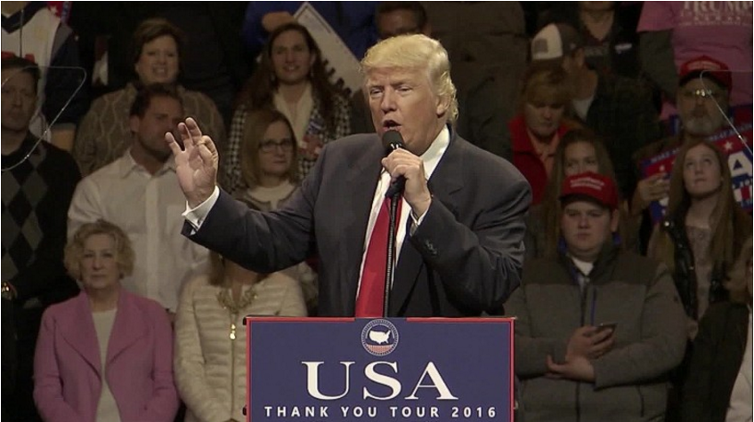

Donald Trump meets with Al Gore on climate change

President-elect Donald Trump met on Monday with Al Gore -- one of the most vocal advocates of fighting climate change.
Before the meeting, Trump spokesman Jason Miller told reporters on a daily briefing call that Gore would meet with Ivanka Trump, the President-elect's daughter, about climate issues, but he did not know what specifically was on the agenda. He had also said the former Democratic vice president would not meet with Trump himself.
But Gore told reporters after the meeting that he met with Trump himself after seeing Ivanka. "I had a lengthy and very productive session with the President-elect," Gore said, according to the pool report. "It was a sincere search for areas of common ground. I had a meeting beforehand with Ivanka Trump. The bulk of the time was with the President-elect, Donald Trump. I found it an extremely interesting conversation, and to be continued, and I'm just going to leave it at that."
Many Republicans are critical of the strong scientific consensus that human activities are exacerbating global climate change, potentially threatening millions of people and their ways of life. Gore has been one of the most outspoken advocates for raising awareness about the dangers of climate change since leaving the White House.
Trump has been skeptical of climate change, tweeting in 2012 that global warming was "created" by the Chinese. He also called it a "hoax" in several public statements and in a 2014 tweet about a cold winter. He denied saying global warming was a Chinese hoax in a debate during the election, though the tweets have remained up, and he has appeared to adopt a different position after his election. The President-elect told The New York Times in an interview after the election, "I think there is some connectivity," when asked about the role that carbon dioxide produced by humans plays in climate change.
Ivanka Trump is expected to take a policy role in her father's presidency, and has supported ideas that are sometimes at odds with some Republican policy positions. During the campaign, Ivanka spoke in favor of a plan to support paid maternity leave and child care costs that became part of Trump's platform.
Miller did not have specifics on what Ivanka's role in the White House would be on Monday, but said the family is "completely supportive" of what the President-elect is doing in terms of his transition planning, and is "looking to help out in any capacity they can."
The Trump children's involvement in their father's presidency has been under increased scrutiny given their extensive jobs in his business ventures. He has said he would resolve potential conflicts of interest as President by having his children run his organization and has a press conference scheduled Dec. 15 to discuss his plans.
In other Trump Tower meetings, the President-elect will meet with Washington DC Mayor Muriel Bowser on Tuesday in New York. Topics are expected to cover police safety, statehood and infrastructure, according to the mayor's office.